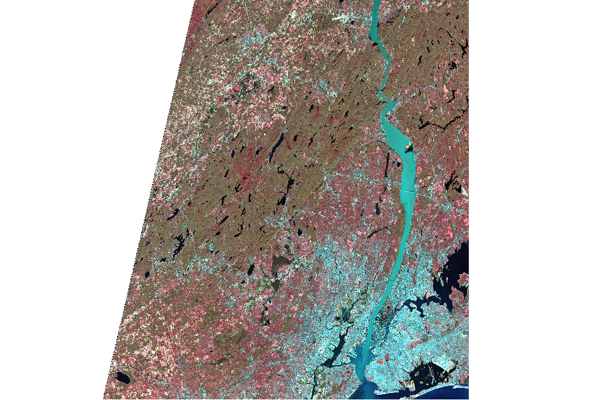
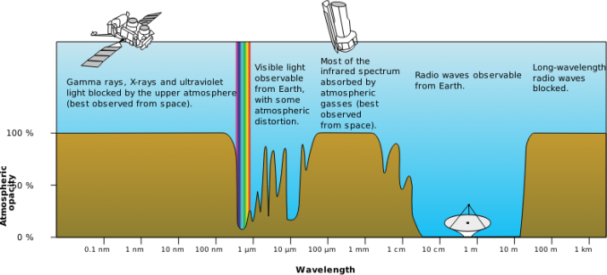
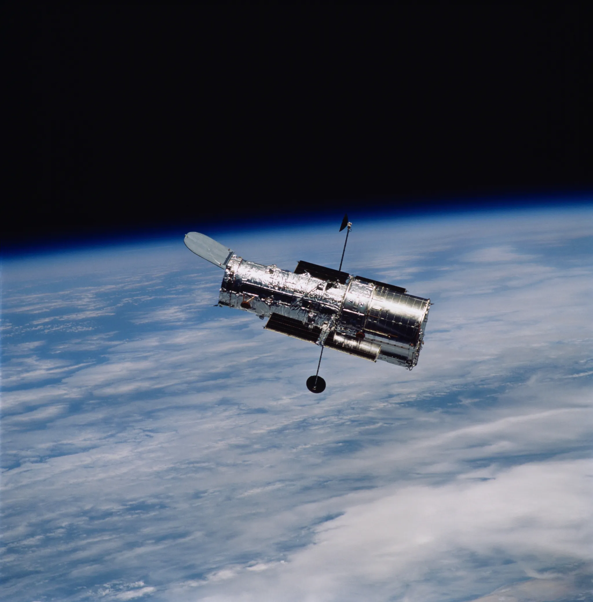
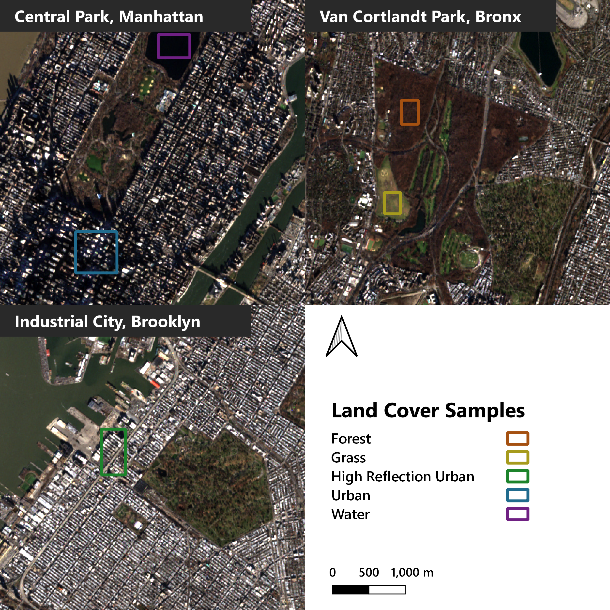
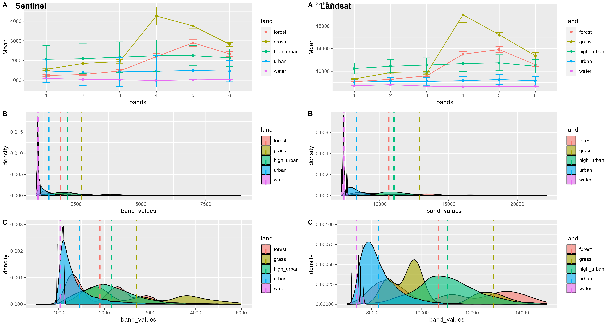

1 Getting Started with Remote Sensing
1.1 Summary
Remote Sensing: acquiring information from a distance (NASA Earth Science Data Systems 2019). There is a huge number of satellites carrying sensors that observe the earth.
1.1.1 Characteristics of Satellite Imagery
The data that can be acquired from remote sensing is interesting! Few things that caught my attention:
- The availability of data is amazing. The whole globe is covered every day, including areas impossible to be accessed by humans.
- Using different wavelengths let us see what the human eye cannot. For instance, near infrared lets us differentiate vegetation from other “green stuff”.

1.1.2 Interaction with atmosphere
The atmosphere impacts the satellite image, which we must account for. There are a few “windows” that electromagnetic waves with certain wavelengths can pass through: the most notable one being the optical window, and the radio window. We must also consider the scattering for the wavelengths that do pass by. We have to consider these interactions with atmosphere when we use data, but nowadays software does the hard work for us.

Meanwhile the astronomers have put their telescope in outer space to avoid the atmosphere.

1.1.3 Resolutions of Satellite Imagery
Resolutions for satellite imagery has different dimensions of resolutions, something I did not think about before.
- Spatial Resolution: the size of each pixel within the image. Higher resolution means you can see the surface of the earth with more detail. This was the only type that came into my mind before this lecture.
- Spectral Resolution: the number of bands of different wavelengths an observation has. This includes visible light such as red, green, and blue, but spans into wavelengths undetectable by the human eye. Some hyperspectral images have more than 200! The better spectral resolution, the better it is to differentiate the materials.
- Radiometric Resolution: is the amount of information in each pixel, the higher the value the more potential values it has. Distinguishing slight changes are made possible with high radiometric resolution. I feel this is a similar idea to the color depth, where 24-bit colors have more variety than 8-bit colors.
- Temporal Resolution: the frequency the data is collected, or the frequency the satellite flies over each area. SENTINEL-2 has 2 satellites, doubling the temporal resolutions compared to having only one.
These often come with trade-offs (detailed data comes at the cost of lower frequency) therefore we must be aware which is important for analysis that we make.
1.2 Applications
1.2.1 Research
The applications of satellite imagery is huge! Here are a few that caught my eye.
One example is that of MapBiomas Alerta (MapBiomas n.d.) tracking deforestation and alerting stakeholders upon detection. According to Teixeira (2022) where the project is reviewed, the main goal of this project is to add to the transparency of the status of deforestation. The change in the political situation in Brazil has also contributed to the increase in deforestation, and the team supports local authorities to prosecute illegal deforestation.
Remote sensing can also be used to predict and assess natural hazards. Gillespie et al. (2007) has summarised the ways damage from disasters including earthquakes, floods, and fires, can be observed from satellite imagery. They have also proposed ways to identify potential threats happening in the future. They have successfully observed the aftermath of disasters by capturing collapsed buildings or flooded areas, but their methodology on prediction of disasters may need further refinement. Limitations include the spatial and temporal resolution of available data, and atmospheric interference affecting the quality of data. Assessment of damage can also be applied to conflicts, one of the examples being Yerushalmy (2023) investigating the Gaza Strip.
These research show the potential of satellite imagery, making available data for all areas of the globe, regardless of the inaccessibility the area has. Conflict areas are a great example of this, where actual exploration is basically impossible. The limitation lies in the spatial resolution, where the granularity of the data directly affects the resolution of analysis. Temporal resolution makes near-real-time interaction impossible. A detailed analysis always need on-site observations, but making use of universally available data may be useful for early reactions.
1.2.2 Personal Analysis on New York City
For my first satellite imagery analysis, I chose New York City, USA.I have sampled areas with different land cover and checked the difference in reflectance, and compared observations from Landsat-8 and Sentinel-2. The following places were sampled, representing each of the land coverages.
| Land Coverage | Sampled Place |
|---|---|
| Forest | Northwest Forest, Van Cortlandt Park, Bronx |
| Grass | Parade Ground, Van Cortlandt Park, Bronx |
| High Reflection Urban | Industry City, Brooklyn |
| Urban | Midtown East, Manhattan |
| Water | Jacqueline Kennedy Onassis Reservoir, Central Park, Manhattan |

I extracted pixels from Sentinel and Landsat within these areas, and analysed the spectral profiles from both.

Wavelengths for each band is as follows in the two satellites, and we can see some slight differences.
| Band | Sentinel | Landsat |
|---|---|---|
| 1 (Blue) | 492.4 | 490 |
| 2 (Green) | 559.8 | 560 |
| 3 (Red) | 664.6 | 665 |
| 4 (NIR) | 832.8 | 842 |
| 5 (SWIR) | 1613.7 | 1610 |
| 6 (SWIR) | 2202.4 | 2190 |
Overall, we can see a similar pattern observed in the 2 satellite projects, with subtle differences observed in the infrared areas.
Building on this difference, I feel it is possible to identify and classify the different land usages from satellite imagery.
1.3 Reflection
The first impression on the term remote sensing was that we are going to do something about sensors located at the surface (which is what I assume the people at the MSc Connected Environments are doing). Nonetheless, the applications of satellite imagery is very fascinating!
1.3.1 An Additional Note
Recent news from my home country of Japan, hit by an earthquake and tsunami on New Year’s Day, featured satellite imagery showing the damage by the disaster. Japan is situated within the Pacific Ring of Fire, and is under an emergent threat of a massive earthquake hitting Tokyo and the most of the Pacific region (70% chance within the next 30 years). Now that I actually saw remote sensing in action, I feel motivated toward learning to make use of this technology.